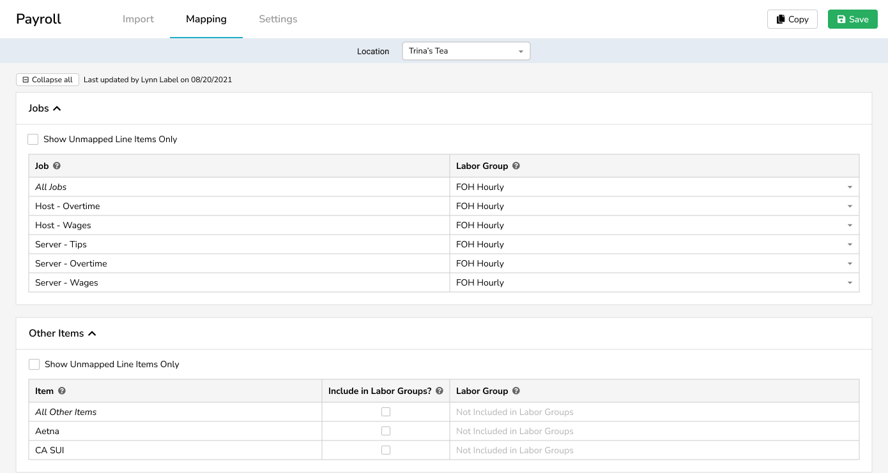
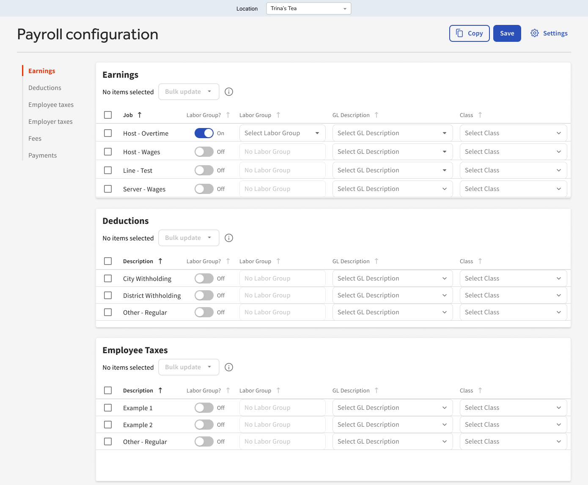

In the past, restaurant owners using Toast had a fragmented understanding of their monthly expenses. We showcased data for their sales and expenses, but it didn’t automatically include labor—which makes up approximately 30% of restaurant costs. To see how labor affected their financial performance, restaurant owners had to manually enter Toast Payroll information into xtraCHEF and/or QuickBooks. Some restaurants would export a CSV from Toast Payroll, make manual adjustments, and use a third-party converter to push their payroll into Quickbooks. We changed that.
Objective:
Leverage xtraCHEF's existing integration with QuickBooks Online to pull labor expenses from Toast Payroll, calculate prime cost, and automatically create corresponding journal entries in QBO.
Shortly after Toast’s acquisition of xtraCHEF, our team began exploring the concept of Payroll Integration, aiming to leverage XC’s existing QBO integration to pull labor expenses from Toast Payroll, calculate prime costs, and push to QBO. Since xtraCHEF already synced sales from Toast POS to QBO, we saw payroll sync as a natural expansion of our existing model. xtraCHEF could seamlessly pull payroll directly from Toast Payroll at the end of each pay cycle. This would surface labor costs for managers as soon as possible.
We believed that by seamlessly syncing sales, payroll, and COGS data to a customer’s accounting software, we will achieve automated, high-accuracy COGS data where customers need it.
What we'd offer:
Weekly prime cost calculations: Customers previously had to allocate their labor costs to a single date per pay cycle, resulting in unrealistic cost overviews. With Payroll Integration, customers who processed payroll on a biweekly/monthly basis could spread their labor costs evenly over the duration of the entire pay cycle, giving a more balanced and accurate view. From there, they can view their operating summary by whatever date range they’re interested in, regardless of when their week or month starts.
Allocating labor evenly
Automatic posting of payroll data to QuickBooks, eliminating restaurants' reliance on paid third-party integration tools.
Next-day journal entry posting to QBO, a time-saver for accountants. Manual data entry has a huge potential to lead to inaccuracies - a 2 becoming a 3, additional zeroes throwing everything off. No more of that. Just set it up once and you’re good to go. We will capture and consume all pay cycles, including off-schedule special payouts like bonuses and missed payments. Never have to enter it a second time.
Process
Moving away from the legacy design system
As the solo designer on the team, I was encouraged to design something that could be delivered quickly. The engineers weren’t comfortable developing in React at the time, so I was expected to use components/patterns from xtraCHEF’s legacy design system for them to utilize.
Since we sought to make the Toast experience more seamless with Payroll Integration, I saw it as an opportunity to incorporate Toast patterns within xtraCHEF for the first time. I prepared two sets of wireframes: one using the legacy design system, and one using Toast’s design system (Buffet). I realized that xtraCHEF’s information-dense content would require wider and more robust tables than what currently existed in Buffet. I talked through those needs with our Buffet team and the front-end engineering team to arrive at a solution.
Early iteration using xtraCHEF's legacy design systemWorking toward a more unified Toast platform using the Buffet design system
I advocated for the Buffet version whenever possible, especially with our product and engineering leaders. Inspired by the visuals of what could be, our engineering team gained motivation to build it with React. I assisted by providing relevant documentation and links to Storybook. When developers had challenges with implementation, I encouraged cross-team communication so they could learn from teams that were comfortable with React.
Championing simplicity
Restaurant operators are often confused by accounting jargon, I designed a Payroll Setup process that minimized this confusion. The process begins with simple questions, and the user’s answers affect their subsequent experience: columns and categories are removed when they don’t apply, reducing cognitive load. I made dropdown fields searchable, provided explanations of payroll categories, and used intuitive industry language to help restaurant users complete unfamiliar tasks. I advocated for simplicity and ease of use throughout the design process, designing a bulk update option for categorizing multiple line items at a time.
I took steps to reduce cognitive load by removing irrelevant columns. The experience would begin with the user deciding how they wanted to set up their payroll, and conclude with mapping. By default, the only columns available were Line Item and Labor Group. If the user chose to enable particular selections during setup, the table would add the relevant attributes. The table would grow to include a Class column if “post by class” was enabled, and a GL column if “payroll sync” was enabled.
The table by default would only include Job and Labor Group as columns, and add columns where relevant.We'd add the GL Description column if they chose to payroll sync.The table would include a Class column if "post by class" was enabled.
I included a search bar within our dropdowns, as there could be upwards of 200 GL codes.
Along the way, I updated my design to accommodate additional complexity. One such example was prompting the user for a vendor selection if an Accounts Payable code was selected. I kept simplicity in mind, resisting the “easy solution” of including an additional column with limited relevance and instead proposing an “expanded row” approach. This saved precious real estate, prevented clutter on the table, and made the additional dropdown’s relevance more obvious.
The vendor dropdown would appear directly below the GL code dropdown if an Accounts Payable code was selected.
Onboarding
I also reached out to the onboarding team and in-product education team to leverage existing Toast onboarding patterns and tooling. I created an in-app tutorial that users could open or dismiss whenever they wanted. I then prototyped the payroll setup experience and conducted usability research to evaluate whether brand-new users would see success with the setup process.
Payroll setup should be a breeze - we leaned on Pendo to provide bite-sized in-app tutorials that users can open or dismiss whenever they want. I designed a self-paced walkthrough with quick tips.
Payroll posting by labor group - this is a big one for teams analyzing FOH and BOH labor separately. We’re giving restaurants the flexibility to analyze labor in different groups, taking differing hourly rates and salaries into account. xtraCHEF provides default labor groups, but restaurants are free to modify them as they please.
All that payroll integration requires from the user is a simple mapping exercise. Our focus here is streamlining the user’s journey to their endgoal, whatever that may be. If they only want to sync to their accounting system and don’t care as much about the reports, that’s fine. All they’ll have to set up is GL codes. Or if they only want to set up the Labor Group assignments to get access to their prime cost reports, they can do that too.
Validation
I ran usability tests with restaurant employees who had never used xtraCHEF and had sole responsibility for their restaurants' day-to-day financial operations. I hypothesized that users would choose to complete an in-product tutorial and learn the benefits of assigning payroll items for reporting and sync purposes.
"That would enable me to save a whole lot of time and effort in terms of data entry."
All participants found value in the concept of payroll sync and commented that they would proceed with the tutorial when visiting Payroll Setup for the first time. They intuited how to update multiple line items simultaneously, and mostly understood the value in categorizing labor.
Based on the feedback, I modified the Labor Group tutorial and added examples of items that shouldn't be assigned. I also added another setting for enabling/disabling classes (an attribute that most restaurants would not use).
"Since this is something I'm not familiar with, I would go through the tutorial. The explanation for each category is helpful and easy to follow."
Reflection and next steps
The engineering team learned React and Buffet, and we made it less painful for restaurants to understand their financial performance by including labor expenses on their Operating Summary report.
Now restaurants can automatically access all their KPIs without having to manually input data themselves. We also eliminated users’ reliance on other integration tools to sync their payroll data to Quickbooks. This helps restaurants save time, money, and effort: shifting their focus from tedious redundant tasks, to seeing the bigger picture of their overall business health. As of 2022, 200+ restaurants (21% of users who have Toast Payroll + xtraCHEF) have Payroll Integration enabled. Payroll Integration allows users to easily accomplish their tasks when they are ready, whether that’s syncing to their accounting system or accessing their prime cost reports.
Details
ContextEliminating restaurants' reliance on single-use integration tools and remain consistent wtih the Toast platform
{kind=link}
{kind=link}
{kind=link}
{kind=link}
{kind=link}
{kind=link}
{kind=link}